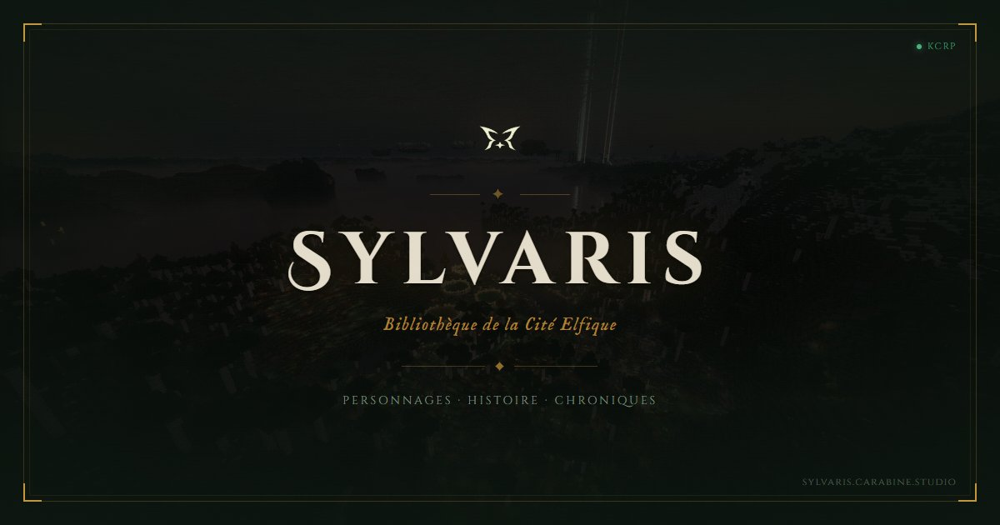

Les archives de Sylvaris s'ouvrent au monde : dans les coulisses d'une décision historique
Sylvaris, royaume des elfes, a décidé d'ouvrir au monde entier l'accès à ses archives. Pour comprendre le sens et la portée de cette décision, le Karmine Déchaîné a rencontré l'un de ses artisans. Un entretien rare, d'une profondeur et d'une franchise remarquables.

C'est une annonce qui n'est pas passée inaperçue. Sylvaris, royaume des elfes, a décidé d'ouvrir au monde entier l'accès à ses archives, rendues accessibles en ligne grâce à la technologie de Karminéa. Pour comprendre le sens et la portée de cette décision, le Karmine Déchaîné a rencontré l'un de ses artisans.
Un choix pesé, longtemps redouté
Pourquoi une telle décision a-t-elle pris autant de temps ? La réponse est dans la mémoire de Sylvaris elle-même.
"Sylvaris est née du refus de répéter les erreurs de l'Ancien Monde, où le savoir était une arme qu'on se disputait et qu'on détruisait. Confier nos archives au regard du monde réveillait cette vieille peur de voir ce que nous avons sauvé nous échapper."
La méfiance envers les humains n'est pas absente non plus — pas de la haine, plutôt de la mémoire. On n'oublie pas qui a allumé les Grandes Guerres. Mais c'est une conviction profonde qui a finalement fait pencher la balance :
"Un savoir qu'on enferme finit par mourir avec ses gardiens. Garder n'est pas protéger. Transmettre, si."
Une première poignée de main
Le choix du moment n'est pas anodin. Sylvaris se prépare à accueillir des invités dans son royaume, et cette ouverture des archives en est le préambule.
"Avant d'ouvrir nos portes, nous ouvrons nos archives, pour préparer le terrain. Que ceux qui viendront aient déjà un aperçu de qui nous sommes et de ce que nous avons bâti. On ne reçoit pas un hôte dans une maison dont il ignore tout. Ces archives sont la première poignée de main."
Des voix contre, et c'est sain
La décision ne s'est pas prise sans résistances. Les Veilleurs ont rappelé qu'exposer l'histoire de Sylvaris revient à en exposer les failles. L'érudit Thoren redoutait que des connaissances anciennes, sorties de leur contexte, soient mal comprises. Et une voix plus instinctive murmurait que ce qui appartient à Sylvaris doit y rester.
"On l'a entendue. On ne l'a pas méprisée. Mais on ne l'a pas suivie."
Ce que le monde va découvrir
On y trouvera la Fondation, l'Intronisation, le récit de la Grande Traversée, les figures, les lignées, les traditions, le sens des titres et des serments. Mais aussi les pertes, les maisons décimées par les Grandes Guerres, les cicatrices d'un monde ancien.
"Raconter d'où l'on vient, c'est avouer ce qu'on a perdu. Ces pages ne sont pas des trophées, ce sont des cicatrices que nous choisissons de montrer."
Ce qui restera scellé
Toutes les pages ne seront pas ouvertes au public. La disposition des défenses, certains secrets diplomatiques, des savoirs dont l'usage pourrait nuire — tout cela reste confié au Haut Conseil et aux Veilleurs.
"Nous ne livrons pas la douleur d'autrui sans son consentement. La transparence n'est pas l'imprudence."
Le rôle de la technologie de Karminéa
Sans la technologie de Karminéa, cette ouverture n'aurait pas été possible sous cette forme.
"Nos parchemins ne quittent pas Sylvaris, et pourtant chacun peut désormais les consulter, où qu'il se trouve. C'est un pont entre notre savoir et le monde."
Un geste diplomatique assumé
Dans un contexte où les relations entre civilisations sont tendues, l'ouverture des archives prend aussi une dimension politique.
"Quand les tensions montent, on a le choix entre élever des murs ou tendre une main. Nous choisissons la main. Ce n'est pas une alliance scellée, c'est une preuve de bonne foi. La suite dépendra de ce que le monde en fera."
Une première pierre, pas un aboutissement
"C'est une première pierre, pas un aboutissement. Si le monde reçoit ce geste avec respect, d'autres suivront. On ne bâtit pas la confiance entre les peuples plus vite qu'on ne bâtit une cité."
Ce que Sylvaris espère transmettre, au fond, c'est une conviction : qu'un monde meilleur n'est pas un rêve naïf mais un travail.
Que Sylvaris s'élève, et que la forêt demeure
"L'Ancien Monde s'est élevé sans regarder ce qu'il piétinait, et il s'est effondré. Cette formule, c'est notre garde-fou. Grandir sans renier nos racines. Ces archives sont une façon de tenir cette promesse — montrer ce que nous sommes pour ne jamais l'oublier nous-mêmes."
Les Archives de Sylvaris sont accessibles dès maintenant
"Ils auraient pu garder leurs secrets. Ils ont choisi de tendre leur mémoire au monde. C'est peut-être là le geste le plus courageux de tous."
— La Rédaction du Karmine Déchaîné